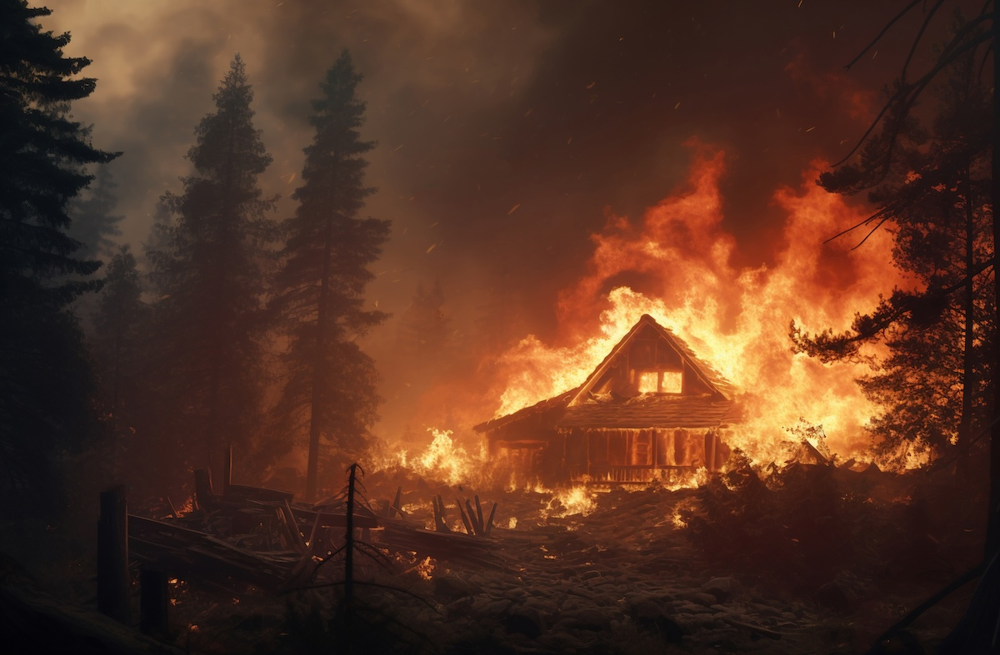

Rüyada Yanan Ev Görmek Ne Anlama Gelir?
Rüyalar, bilinçaltımızın yansımalarıdır ve bazen bize önemli mesajlar verir. Rüyada yanan bir ev görmek, oldukça etkileyici ve korkutucu bir deneyim olabilir. Peki, bu rüya ne anlama gelir? İşte detaylı bir yorum:
Rüyada Yanan Ev Görmenin Genel Anlamı
Rüyada bir evin yanması, genellikle büyük değişimlerin, dönüşümlerin ve duygusal patlamaların habercisidir. Bu rüya, hayatınızda önemli bir dönüm noktasına geldiğinizi, eski alışkanlıklarınızı geride bırakıp yeni bir başlangıç yapmanız gerektiğini simgeliyor olabilir.
Olumlu Yorumlar
- Yeniden Doğuş ve Değişim: Ateş, yok edici olduğu kadar dönüştürücü bir güçtür. Bu yüzden rüyada bir evin yanması, geçmişi geride bırakıp yeni bir hayata adım atacağınızı gösterebilir.
- Kişisel Gelişim: İçsel bir arınma sürecine giriyor olabilirsiniz. Kendinizi ruhsal ve duygusal açıdan yenileme zamanı gelmiş olabilir.
- Eski Alışkanlıkları Bırakma: Artık hayatınızda işe yaramayan şeylerden kurtulma isteğinizi temsil edebilir.
Olumsuz Yorumlar
- Stres ve Kaygı: Eğer rüyanızda yanan evi izleyip üzüntü duyuyorsanız, bu durum hayatınızdaki stres ve kaygının arttığını gösterebilir.
- Ani Değişimler: Beklenmedik bir olayın sizi etkileyebileceğine ve alıştığınız düzenin bozulabileceğine işaret edebilir.
- Maddi Kayıplar: Ev, rüyalarda genellikle güvenliği ve maddi durumu simgeler. Bu nedenle yanan bir ev görmek, finansal kayıplara veya iş hayatında zorluklara delalet edebilir.
Rüyanın Detaylarına Göre Yorumlar
- Kendi eviniz yanıyorsa: Özel hayatınızda büyük bir değişiklik yaşayabilirsiniz.
- Bir başkasının evi yanıyorsa: Yakın çevrenizde önemli bir dönüşüm yaşanabilir.
- Evi söndürmeye çalışıyorsanız: Bir sorunu çözmek için çaba sarf ettiğinizi gösterir.
- Yanmış bir evin kalıntılarını görüyorsanız: Geçmişte yaşadığınız bir olayın etkilerinin devam ettiğini işaret eder.
Sonuç
Rüyada yanan ev görmek, hayatınızda önemli değişikliklerin kapıda olduğuna işaret eden güçlü bir simgedir. Bu rüyanın sizin için ne anlama geldiğini en iyi siz bilebilirsiniz. Rüyanın detaylarını göz önünde bulundurarak, hayatınızdaki gelişmelere uyum sağlamaya çalışabilirsiniz.